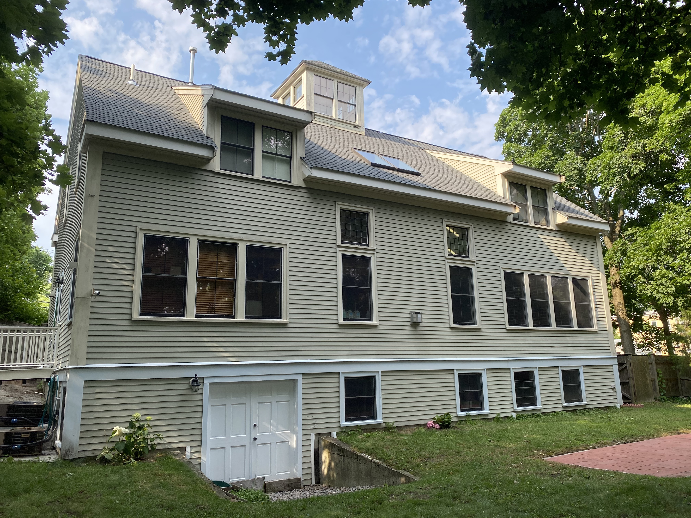
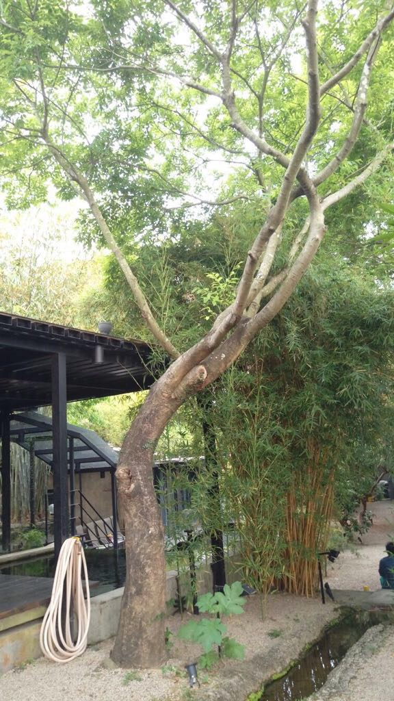
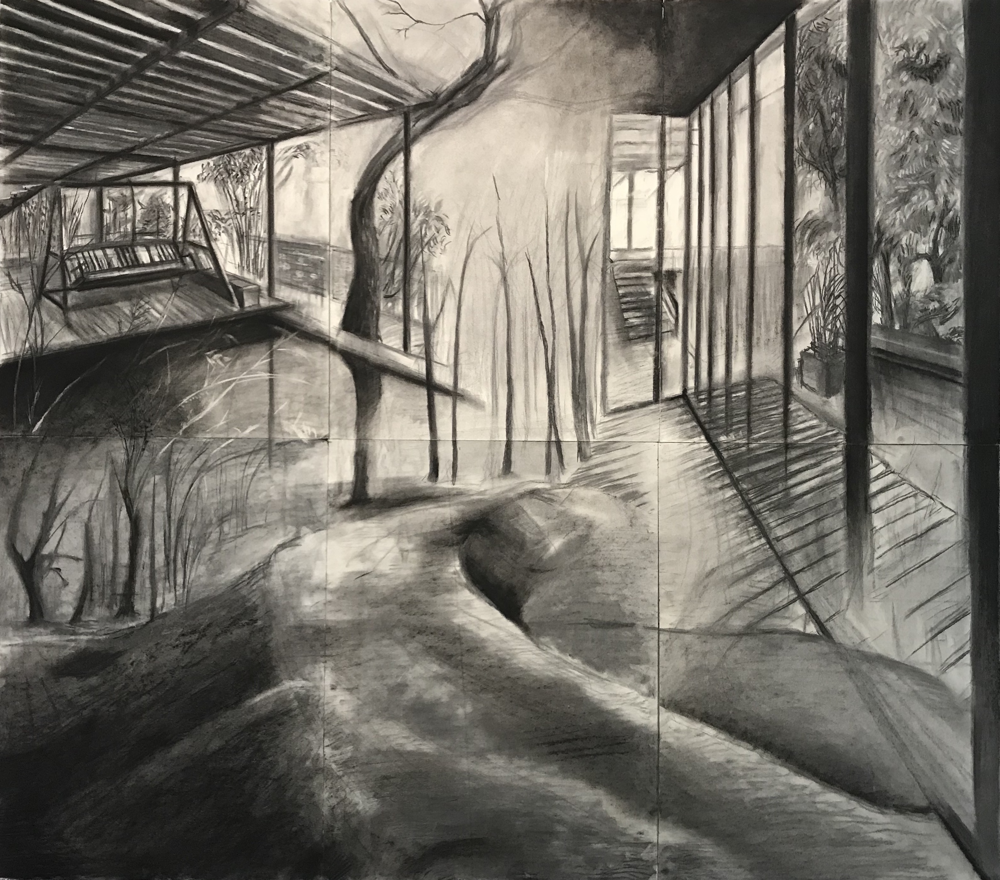
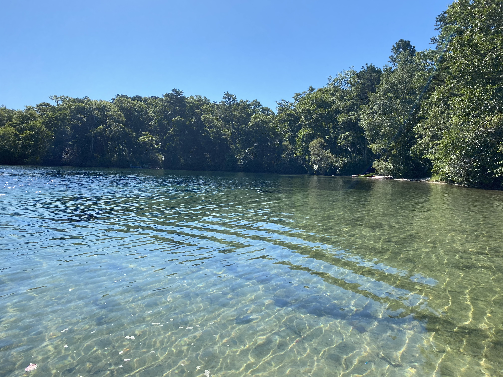
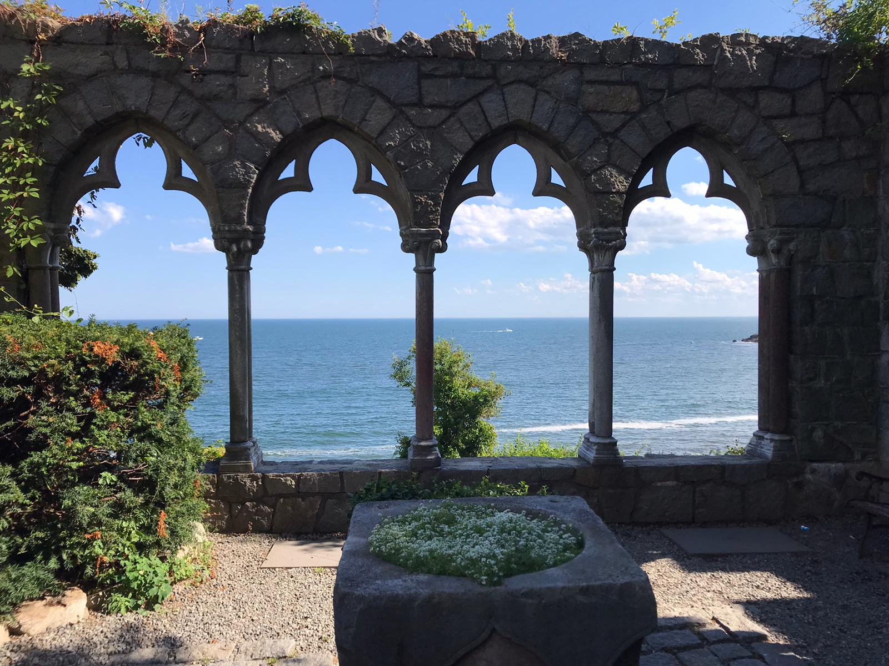
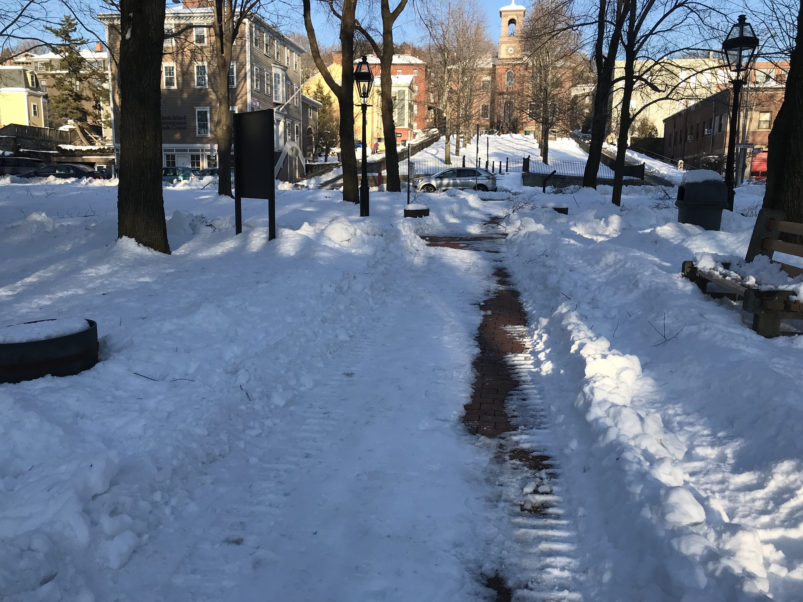
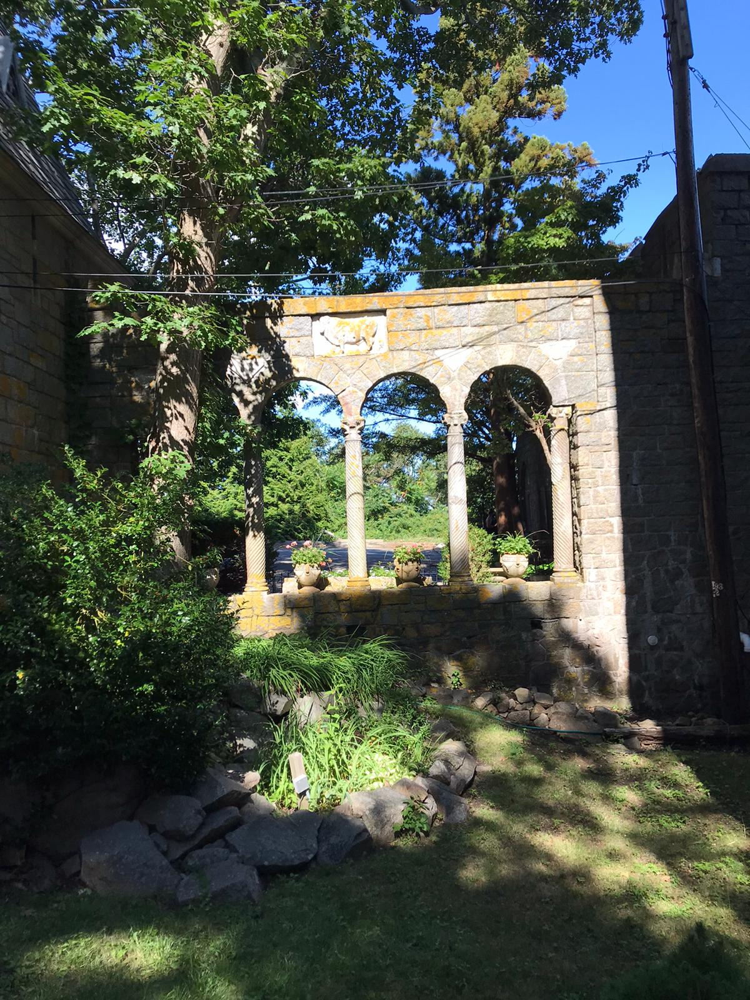
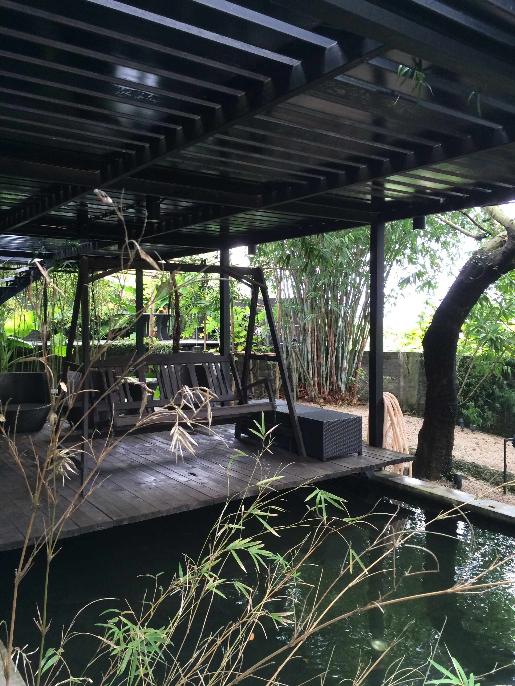

Environmental Memories
Clare Cooper Marcus
Appropriation, attachment, and identity refer collectively to the idea that people invest places with meaning and significance and act in ways that reflect their bonding and linkage with places.
Appropriation means that the person is transformed in the process of appropriating the environment. (Werner, Altman, & Oxley, 1985, p.5)
Introduction
Many individuals' most powerful memories revolve around places—the house where they grew up, the secret places of childhood and adolescence, the setting where they first fell in love, the neighborhood where they established their first horne, the dwelling where they raised their children, the summer horne they built in the woods, the garden they first nurtured. Such memories often form rich sources of inspiration—to poets, novelists, designers, homemakers. Sometimes, too, comparisons with much-loved places of the past create dissatisfaction and sadness in the present. Occasionally, if a person is in the business of creating environments for other people (architect, interior designer, landscape architect), his or her own memories may influence, inappropriately, the designs for other people.
A series of themes reverberate throughout: the issue of gaining control over space in order to feel a positive sense of self-identity; the issue of manipulating, molding, or decorating that space in order to create a setting of psychological comfort, which interconnects with identity or personal well-being; and the issue of continuity with significant places of the past, so that a sense of control and identity experienced at an earlier age is supported by reproducing the essence of a significant past environment.

2010-2021

2017
Theme One:
Control over Physical Environment
We will briefly elaborate on each of these themes. It seems clear that control over some portion of the physical environment is a critical component of positive self-identity. For children, their bed, their "cubby" at daycare, or a secret "den" in the woods may be the start of feeling there is a place that is truly theirs. In adolescence, bedroom posters, a wild decor, or deliberate disarray may be used to communicate an emerging sense of self-identity, separate from parents. The family home established for child rearing is, for most people, such a powerful communicator of identity that its loss with the onset of old age or divorce may be as large a threat to self-identity as the loss of a human relationship. Examples of all of these situations will be presented in the form of case studies.

2010-2021
Theme Two: Personalizing our Own Space
A second theme that emerges constantly in discussing issues of place attachment, closely tied to the first, is that of manipulating or molding a space to reflect who we believe we are. Having title to a space is only the beginning—"This is John's bedroom...This is Gwen's desk...This is Stephen'S locker…." Decorating or personalizing this space in our own particular style is our way of saying: "This is mine; not any room/desk/locker, but mine...This is an expression of who I am." Impediments to doing this, in the form of parental, institutional, or corporate rules, can be serious inhibitors of self-expression in the physical environment, and thus of a positive sense of self-identity.

2020

2020

2017-2021
Theme Three: Continuity in the "Home"
A third theme that emerges frequently during in-depth dialogues on people's emotional attachment to home, is the importance of continuity with important environments and people of the past. If our sense of identity develops and changes through our lives as a result of relationships with a variety of significant people and places, then it makes sense that we might wish to echo those places in the dwellings we choose, and place mementos of such people within them. These acts of anchoring ourselves to times, people, and places in our personal past are critical to our emotional well-being; they allow us to weather the swells and storms of change that are components to a greater or lesser extent of every life path. Such continuity with the past becomes especially critical in old age.
Case Studies
For many years, I have asked students of architecture and landscape architecture at Berkeley to draw their most fondly remembered childhood environment and then to write about this and subsequent significant places in an exercise I term "Environmental Autobiography." After reading hundreds of these essays over the years, it is clear that these earliest childhood places are powerful images, resonating into adulthood via memories, dreams, even the creative work of some adult designers.
Another woman, looking back on the whole landscape of her rural European childhood, remembered it as a powerful source of nurturance and support.
The sounds and smells, above all, the vegetation of a country childhood, seem like the soft pillow and quilts of our infant crib, writ large upon the landscape. Here were the trees that nurtured us, the shrubs that gave us fruits and berries, the flowers we called brothers and sisters. These were our family beyond the family, timeless scenery, imprinted in that time of acute vulnerability and openness to the world. The human family is mobile and mortal; the botanical family of childhood returns each season, indifferent to our coming and going. But we are not indifferent to it—our green womb of homecoming.
The near universality of these fondly remembered childhood places and the tone and emotion of these recollections—15 or 30 years later—suggest that they represent an experience that goes far beyond the actual act of making or finding a secret place and far deeper than the actual amount of time spent there would suggest. Places that are molded or constructed are often our first attempts to create something material outside ourselves. They are, perhaps, a physical expression of the emerging ego-self, separate from parents and family. They are our first tentative experiments in the experience of dwelling, in appropriating and personalizing a special place, and—unconsciously—in reflecting on what we have made. In later life, as we create a home as an expression of personal and social values, that reflection is more conscious.

2020
For those who recall a special landscape or place in nature, they are perhaps reconnecting with a deep spiritual experience of connectedness with all life—an experience which many children have but suppress because of its power or mystery, or because later linear thinking relegates it to childish daydreaming. Thinking back to that precious time of childhood when we first became aware of both our self-identity and the holistic nature of life, many become conscious (perhaps for the first time) of an almost-numinous quality of that time and place. Indeed, one Jungian scholar proposes that those who, in adult life, go further in the process of individuation—becoming their own unique selves—have almost always had meaningful experiences of the unconscious in childhood.
Often secret places or private activities are involved which the child feels are uniquely his and which strengthen his sense of worth in the face of an apparently hostile environment. Such experiences, although not consciously understood...leave a sense that one's personal identity has a transpersonal source of support. (Edinger, 1973, p. 295)
Reproducing Special Places of Childhood Trauma
For many years, I have been investigating the emotional meaning of people's dwellings. I have used a method of interviewing based on roleplaying, and where appropriate, have asked people to speak to their house as if it were animate, and then to become their house speaking back to themselves. A frequently recurring theme in these interviews is the recognition of the continuing influence of a significant childhood setting on current choices of dwelling location, dwelling form, garden design, interior decoration, and the like. The cases that follow—of Connie, Priscilla, Joe, Michael, and Lou—are drawn from over 60 interviews conducted with people in the San Francisco Bay Area between 1977 and 1990.
Security and Expression of Self through Recreated Environments
If our childhood is a time period that we embrace as an extension of self, then it is not surprising that many of us try to incorporate some of the environmental memories of that period into our adult homes. The choice of a dwelling that repeats some essence of a childhood home may simply represent a wish for security: "If my childhood was spent in a house like this, maybe in my adulthood I will experience some of the same nurturance by settling in a similar place." On the other hand, that original dwelling of memory was selected or created by another person and was his or her expression of self: "Grandfather chose that kind of place as an expression of who he was. I admire grandfather. I will choose a similar place so that I can be like him." Recreating and nurturing a relationship with a beloved family member, now gone, is often enacted via the physical environment: displaying their photograph, tending objects they once owned or trees they once planted, living in a house like the one they built or chose to live in.
Case Study Two: Connie: An "English" Harden in a Faraway Land
Connie came to the United States as an immigrant 20 years ago, in her late twenties. After marriage and acquiring a home, she began to create a flower garden at the front of her house. She had grown up in England during the Second World War, was evacuated from London during the Blitz, and in a country setting, was taught to love gardening by an aunt. She became an avid gardener, and by 10 years old, was raising vegetables for the family and growing flowers on a tiny patch of ground in front of their house. As an adult, living in a different culture and climate, she has created an "English" garden in front of her house, a very different kind of garden from most of those in her neighborhood. At the back, a large vegetable bed is her private preserve—she likes to work there alone and experiences a profound sense of connectedness and centering while engaging in such mundane tasks as digging and weeding. The garden and her work in it create a (largely) unconscious connection to the time and place of her childhood, when raising food for her family gave her childhood a dimension of usefulness. That almost numinous connection with earth and nature, first experienced in childhood, was being sought again as the age-old tasks of sowing, tending, harvesting were repeated in their appropriate seasons. For Connie, the garden of her adult home has permitted her to reproduce the place and activity that gave her the most profound experience of centeredness and nurturance during the impressionable and sometimes fearful wartime years of her childhood.

2019

2014-2021
This phenomenon—of creating a garden that repeats some aspects of an earlier, fondly remembered place—may be more common than we think. In a study of more than a hundred gardens in new suburban tracts east of San Francisco Bay, Helena Worthen (1975) found that many people
...did not understand where they were….People planted gardens which made them feel at home….They weren't interested in discovering which plants were ecologically best suited to their gardens. A man from Oregon wanted roses, gladioli, and a blue spruce, because that was what he had grown up with. A teenaged girl, who loved "Hawaii Five-O" created a tropical jungle out front. A woman of Italian extraction planted the same vegetables her mother had grown….A pleasantly daffy elderly man was cultivating a Grevillea robusta which he claimed was a silver birch…."Oh, I'm sure it's a birch," he said. "I'm from Illinois and all we had were roses and silver birches." (pp. 17-18)
Clearly, for this man, the tree had to be a silver birch because such a tree enabled him to feel linked to the places of his formative years.
what is the most memorable place in my childhood?
Which objects in my room are most important to me?
What kind of house do I want to live in?
which room in the house do I spend the most time in?
My favorite memory took place in...